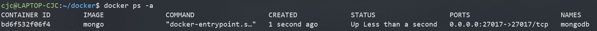

首先，WSL真香！
开启WSL
最简单的方式是使用管理员权限运行Powershell，然后输入：
Enable-WindowsOptionalFeature -Online -FeatureName Microsoft-Windows-Subsystem-Linux
重启电脑，然后在应用商店中安装WSL发行版。
Arch
注意到WSL是没有Arch Linux发行版的（以前有一个非官方的，很快被下架了），但是我们有办法添加Arch发行版。去这个仓库下载打包好的appx文件和证书，首先将证书导入至受信任的根证书颁发机构，然后安装appx即可。
体验
坑
-
默认WSL不会读取
~/.bashrc而会读取~/.bash_profile，所以需要在~/.bash_profile中写入：bash if [[ -f ~/.bashrc ]] ; then . ~/.bashrc fi才能够正常读取bash配置。
Netcat
首先我Google到的是gnu-netcat。但是运行时报错nc: core.c:372: core_tcp_connect: Assertion ret == 0' failed.搜索了相关Issus之后，我更换成了openbsd-netcat，问题解决。
缺点
- WSL下无法使用Docker等涉及内核的操作，该缺陷在WSL2中被解决。
- 默认无图形界面，使用GUI需自己安装X Server，较为麻烦。
Windows Terminal
注意，截至目前，Windows Terminal仍处于预览阶段，正式发布预计要到2020年4月。

安装WSL后，Windows Terminal能够自动识别WSL并添加至可用Terminal列表中。
Bug
- 启动Shell后的工作目录为Windows当前用户的Home目录，而非Linux的用户Home目录。

可以通过在配置文件中加入"commandline" : "wsl ~"来解决，不过这个方案只适用于默认WSL发行版，对于其他发行版无效，可以通过在.bashrc中添加一条判断语句来解决。
-
Windows Terminal目前暂无法自动添加至右键菜单上下文，需手动添加注册表。
-
往Terminal中粘贴内容是会自动在行间加空格。（更新：这个bug是由于\r\n与\n的处理问题，在0.7中被解决）
WSL2
Docker
可喜可贺，WSL终于能用Docker了。
配置镜像源（无systemd）：
在配置文件
/etc/default/docker中的DOCKER_OPTS中配置Hub地址：
DOCKER_OPTS="--registry-mirror=https://docker.mirrors.ustc.edu.cn/"重新启动服务:
sudo service docker restart
坑
-
官方宣称在18945之后的版本中Windows访问WSL提供的网络服务只需使用localhost即可（服务需绑定之0.0.0.0而不是127.0.0.1，因为实际上这些连接被认为是局域网中的连接）。
尝试在Docker中使用。

使用
netstat -ano如下：然而在Windows下只能使用IPv6地址访问：
 b
b而不能使用IPv4：

-
无法使用systemd。
Pycharm
Pycharm能够将Python解释器设置为WSL中的Python。

同时能够将terminal设置为WSL：

只需要将Shell path设置成bash.exe即可。注意设置为arch.exe等自定义的发行版名称时，无法将当前工作目录传递给Shell。
注意到由于WSL没有图形界面，无法在Python中运行GUI程序。
Bug
~~在WSL中安装的包无法被识别：~~

~~因此也无法使用这个包的自动补全、查看定义等一系列功能。~~
文档里写得清清楚楚：

我错了，我应该看文档的。安装rsync之后问题解决。